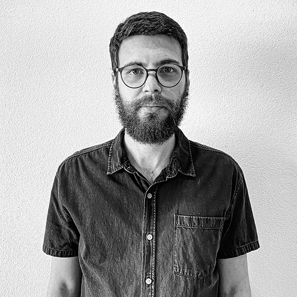

Sobre
Somos um escritório que visualiza o espaço de maneira integrada e propõe soluções que consideram a Arquitetura por sua urbanidade, por suas possibilidades e vocações espaciais e por sua ambiência interna, transitando entre as disciplinas de Arquitetura, Interiores e Design. Atuamos, portanto, nas mais diversas escalas, sempre em busca de realizar projetos que propiciem fluidez, versatilidade, conforto, usabilidade e qualidade estética para os espaços projetados. Nossa busca por equilíbrio entre forma e função, entre a beleza e o uso, entre a contemplação e a fruição, se dá através de um processo obrigatoriamente colaborativo com o cliente e/ou o usuário final, numa construção conjunta e complementar. Buscamos enfatizar as qualidades espaciais através de diferentes materiais e materialidades, de contrastes entre texturas e cores, da presença marcante da paisagem e das vegetações e dos mobiliários de design moderno e contemporâneo, criando uma personalidade única para cada projeto, mas sempre atentos às necessidades e realidades das mais diferentes demandas e dos ambientes naturais e construídos que os envolvem.
Equipe
Marina Menossi
Arquiteta Sócia
Arquiteta. Graduação pela FAU-USP em 2017 (Université de Perpignan, França, 2014-2015). Possui experiência em projetos de arquitetura e interiores, com foco em projetos residenciais, comerciais e de hotelaria, em âmbito nacional e internacional. Atuou como arquiteta e coordenadora de projetos (Flavia Romi Arquitetura, Studio Arthur Casas, Jacobsen Arquitetura) e como gestora de projetos executivos e obras (Loft). Possui pós-graduação em Gestão de Projetos pela FGV e MBA em andamento em Gestão para Arquitetos e Designers pelo IPOG.
marina@noss.arq.br
Renan Sampaio
Arquiteto Sócio

Arquiteto. Graduação pela FAU-USP em 2018 (Budapest University of Technology and Economics, Hungria, 2015-2016). Possui experiência com projetos de arquitetura de edificações e de interiores para diversos usos como residenciais, públicos e comerciais. Atuou como estagiário no setor público, como arquiteto e coordenador de projetos (Salinas e Freitas; MNMA Studio) e como autônomo. Possui mestrado em andamento pela FAUUSP na área de Habitat, onde estuda a temática da produção do espaço e das possibilidades da realização do urbano e do comum.
renan@noss.arq.br